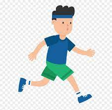
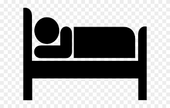
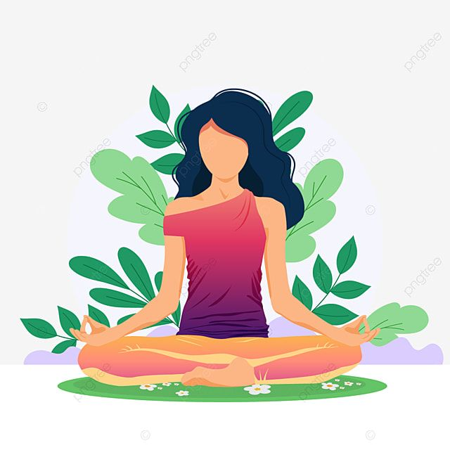

Suffering alone does nothing it can be hard but one of the most important steps to starting your recovery.Find a friend or family member who can lend a ear and talk to them about your problems.
It may feel strange to do something fun when you are sad,make sure you don't force yourself to do so but push yourself to pick-up a hobby or something you find relaxing
It is important to eat 3 healthy meals a day you also must exercise just a little physical activity like a brisk walk will do
Try getting a regular 7-8 hours of sleep and have a set routine for your bedtime and wakeup time
These are stimulants they may worsen your condition
Minimum 10 minutes of meditation like pranayam,deep breathing,abdominal breathing,etc... will help you gather your thoughts and relax,it can be good start to your day as it helps you get your thoughts in order
H.A.L.T stands for hungry,angry,lonely and tired these are some of the most common causes of sadness and stress and addressing them can be very helpful
Try to do a task like cleaning your house or reading a book,these will be a good distraction
.
.
.
.
.
.